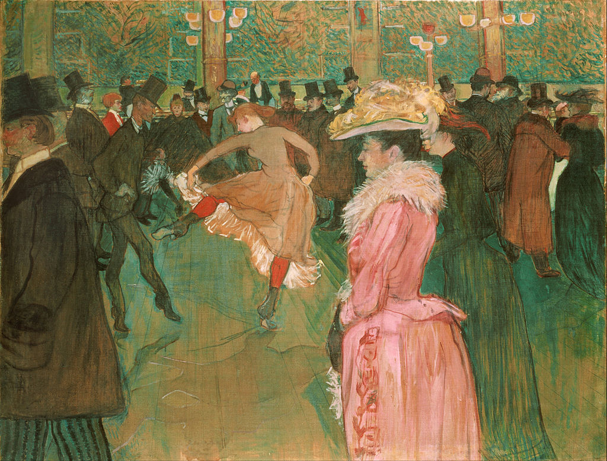

<head>
<meta charset="UTF-8" />
<meta name="keywords" content="drawing, painting" />
<meta name="description" content="drawings by Sunjy" />
<title>Sunjy</title>
<link rel="shortcut icon" type="image/x-icon" href="../../mImages/mCommon/favicon.ico" media="screen" />
<link rel="stylesheet" type="text/css" href="../../mCsses/mCommon/mCssA.css" />
<link rel="stylesheet" type="text/css" href="../../mCsses/mCommon/mCssB.css" />
<link rel="stylesheet" type="text/css" href="../../mCsses/mCommon/mCssC.css" />
<link rel="stylesheet" type="text/css" href="../../mCsses/mCommon/mCssD.css" />
<link rel="stylesheet" type="text/css" href="../../mCsses/mContent/mCssA.css" />
<link rel="stylesheet" type="text/css" href="../../mCsses/mContent/mCssB.css" />
<link rel="stylesheet" type="text/css" href="../../mCsses/mContent/mCssC.css" />
<link rel="stylesheet" type="text/css" href="../../mCsses/mContent/mCssD.css" />
</head>
<script type="text/javascript" src="../../mScripts/mContent/mContentAA.js" /></script>
<script type="text/javascript" src="../../mScripts/mContent/mContentAB.js" /></script>
<script type="text/javascript" src="../../mScripts/mContent/mContentAC.js" /></script>
<script type="text/javascript" src="../../mScripts/mContent/mContentAD.js" /></script>
<script type="text/javascript"></script> 
<script type="text/javascript">
document.write('<div class="mImgAbsolute"></div>');
/*
document.write('<p class="mFontSizeBColor" />From a white paper...</p>');
document.write('<table class="center"><tr><td>');
document.write('');
document.write('</td></tr></table>');
*/
</script>


<script type="text/javascript">
document.write('<p class="mFontSizeBColor" />At the Moulin Rouge, The Dance</p>');
document.write('<p class="mFontSizeSColor" />“At the Moulin Rouge, The Dance” is the second of many paintings by Toulouse-Lautrec depicting the Moulin Rouge cabaret built in Paris in 1889. It portrays two dancers dancing the can-can in the middle of the crowded dance hall. <br><br>An inscription by Toulouse-Lautrec on the back of the painting reads: “The instruction of the new ones by Valentine the Boneless.” <br><br>This inscription indicates that the dancing man is Valentin le désossé, a well-known dancer at the Moulin Rouge, and he is teaching the newest addition to the cabaret.<br><br>Featured in the painting are many aristocratic people such as poet Edward Yeats, the club owner, and Toulouse-Lautrec’s father.<br><br>Henri de Toulouse-Lautrec immersed himself in the colorful and theatrical life of Paris in the late 1800s, which allowed him to produce a collection of elegant and provocative images of the modern and decadent life of Paris at the time.<br><br>Moulin Rouge<br><br>The Moulin Rouge is a cabaret in Paris, France. The original house, which burned down in 1915, was founded in 1889. It is close to Montmartre in Paris, with a red windmill on its roof that marks it. Moulin Rouge is best known as the birthplace of the modern form of the can-can dance.<br><br>Originally introduced as a seductive dance by the courtesans who operated from the site, the can-can dance revue evolved into a kind of entertainment of its own and led to the introduction of cabarets across Europe.<br><br>Today, the Moulin Rouge is a tourist attraction, offering musical dance entertainment for visitors from around the world. The club’s decor still contains much of the romance of the end of 19th century France.<br><br>The Moulin Rouge cabaret quickly became a great success because it offered a mixture of unique factors. It had a revolutionary architecture for the auditorium that allowed rapid changes of décor and where everyone could mix.<br><br>The festive champagne evenings allowed people to dance and be entertained thanks to amusing acts that changed regularly. <br><br>A new dance that became more and more popular, it was called the Can-can. In the dance, the dancers in titillating costumes dance in rhythm. Famous dancers and artists performed at the venue.<br><br>It was also a place loved by artists, including Toulouse-Lautrec, whose posters and paintings secured rapid and international fame for the Moulin Rouge.<br></p>');
document.write('<table class="center" /><tr><td>');
document.write('<br>An inscription by Toulouse-Lautrec on the back of the painting reads: “The instruction of the new ones by Valentine the Boneless.” <br><br>This inscription indicates that the dancing man is Valentin le désossé, a well-known dancer at the Moulin Rouge, and he is teaching the newest addition to the cabaret.<br><br>Featured in the painting are many aristocratic people such as poet Edward Yeats, the club owner, and Toulouse-Lautrec’s father.<br><br>Henri de Toulouse-Lautrec immersed himself in the colorful and theatrical life of Paris in the late 1800s, which allowed him to produce a collection of elegant and provocative images of the modern and decadent life of Paris at the time.<br><br>Moulin Rouge<br><br>The Moulin Rouge is a cabaret in Paris, France. The original house, which burned down in 1915, was founded in 1889. It is close to Montmartre in Paris, with a red windmill on its roof that marks it. Moulin Rouge is best known as the birthplace of the modern form of the can-can dance.<br><br>Originally introduced as a seductive dance by the courtesans who operated from the site, the can-can dance revue evolved into a kind of entertainment of its own and led to the introduction of cabarets across Europe.<br><br>Today, the Moulin Rouge is a tourist attraction, offering musical dance entertainment for visitors from around the world. The club’s decor still contains much of the romance of the end of 19th century France.<br><br>The Moulin Rouge cabaret quickly became a great success because it offered a mixture of unique factors. It had a revolutionary architecture for the auditorium that allowed rapid changes of décor and where everyone could mix.<br><br>The festive champagne evenings allowed people to dance and be entertained thanks to amusing acts that changed regularly. <br><br>A new dance that became more and more popular, it was called the Can-can. In the dance, the dancers in titillating costumes dance in rhythm. Famous dancers and artists performed at the venue.<br><br>It was also a place loved by artists, including Toulouse-Lautrec, whose posters and paintings secured rapid and international fame for the Moulin Rouge.<br>" />');
document.write('</td></tr></table>');
</script>


